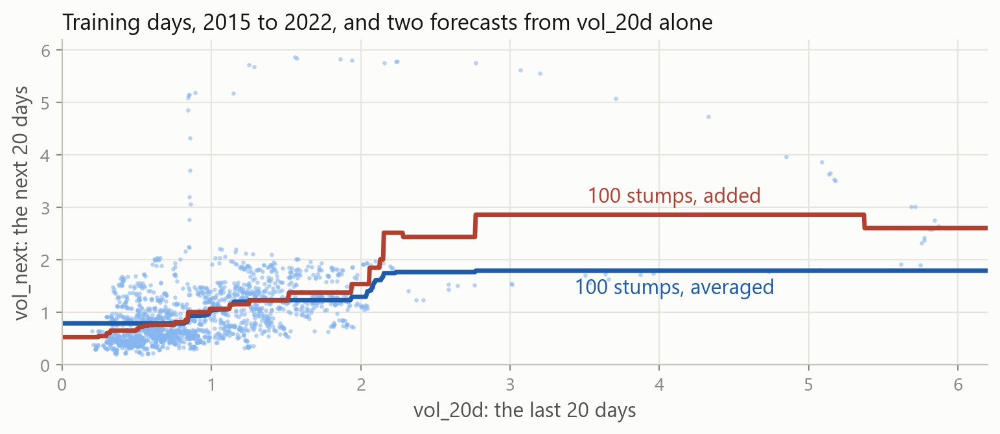
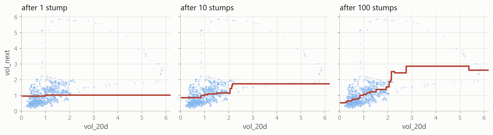
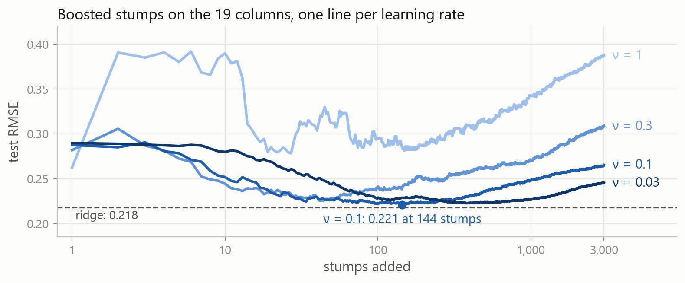
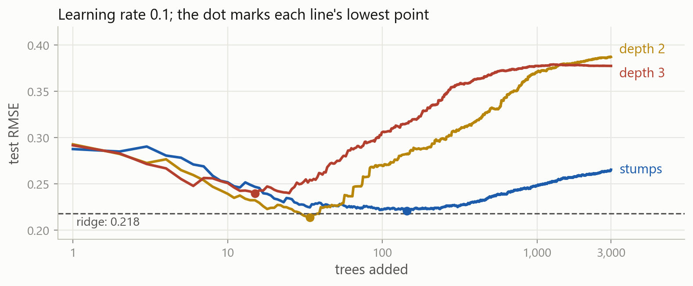
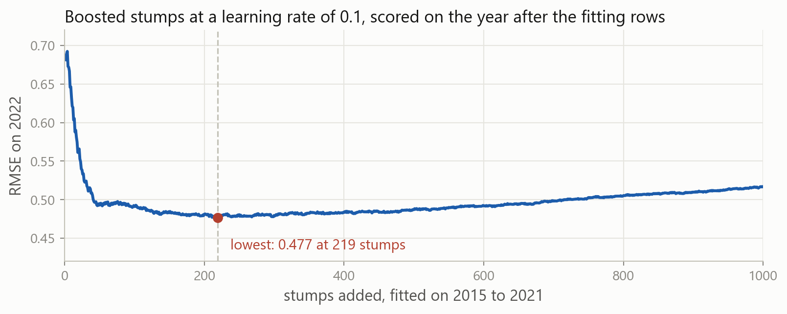
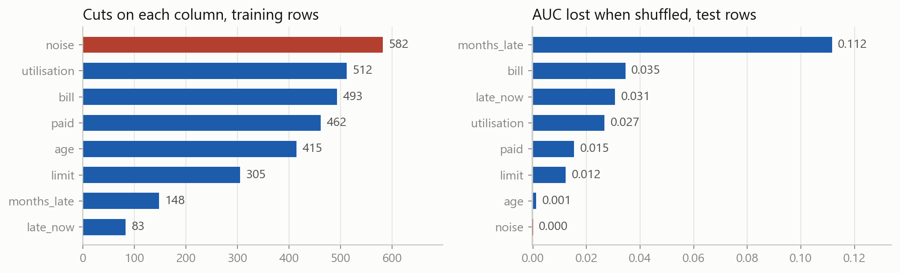

Machine Learning in Finance · Session 12
| model | defined by | test score | |
|---|---|---|---|
| a number | linear regression | \min_{\beta}\ \sum_i \big(y_i - \beta_0 - \sum_j \beta_j x_{ij}\big)^2 | RMSE 0.237 on vol_20d |
| ridge | \min_{\beta}\ \text{RSS} + \alpha \sum_j \beta_j^2 | RMSE 0.218 | |
| lasso | \min_{\beta}\ \text{RSS} + \alpha \sum_j \lvert \beta_j \rvert | RMSE 0.217 | |
| a label | logistic regression | P(y = 1) = \sigma\big(\beta_0 + \sum_j \beta_j x_j\big) | AUC 0.748 |
| k-nearest neighbours | \hat p = \frac{1}{k} \sum_{k\ \text{nearest}} y_i | AUC 0.749 | |
| both | a tree | \hat f(\mathbf{x}) = \sum_m c_m \,\mathbf{1}\{\mathbf{x} \in R_m\} | RMSE 0.241, AUC 0.722 |
| a random forest | \hat f(\mathbf{x}) = \frac{1}{B}\sum_b \hat f^{\,b}(\mathbf{x}) | RMSE 0.226, AUC 0.777 |
A forest grows deep trees side by side and averages them. Today’s model grows small trees one after another, each fitted to what the ones before still get wrong.
The table and split that ridge and the forest were scored on: one row per trading day, 19 columns, and vol_next, the index’s volatility over the next 20 days.
The exercises and the case are where you practise each of these.
Part 1
A forest removes the variance of deep trees. Small trees make a different error.
One stump errs 0.600 on the training days and 0.262 on the test days. The average of 100 stumps, each grown on a bootstrap sample, barely improves either.

On vol_20d alone, 100 averaged stumps blur one step into a ramp from 0.79 to 1.80. Added one after another, 100 stumps build a staircase from 0.53 to 2.86.
Deep trees, grown side by side on bootstrap samples, then averaged. Each tree fits its sample closely, so what the average removes is variance.
Small trees, grown one after another, each fitted to what the trees before it still get wrong. Each tree is too simple, so what the sum removes is bias.
An average of stumps is about as simple as one stump. A sum of stumps can bend wherever the data does.
Part 2
The definition, the procedure, and the procedure run by hand on six days.
\hat f_M(\mathbf{x}) \;=\; \bar y \;+\; \nu \sum_{m=1}^{M} h_m(\mathbf{x})
Each h_m is a small tree and M is the number of trees; \nu, between 0 and 1, is the learning rate. The trees are added, so there is no 1/B.
Tree m is fitted to what the first m - 1 trees left: the residuals y_i - \hat f_{m-1}(\mathbf{x}_i).
Three settings shape the result: the number of trees M, the learning rate \nu, and the size of each tree.
The six days from last time, with \nu = 0.5: each step fits a stump to the dashed distances and adds half of it. Six stumps take the RSS from 0.815 to 0.038.
h is fitted to the residuals, not to vol_next, and half of its forecast is added on. The six RSS values are the diagram’s.
Run the loop for 50 steps instead of 6. What happens to the RSS, and to the forecast?
The number of steps goes inside range. Compare the forecast with six["vol_next"].
The RSS falls to 0.0001, and every forecast is within 0.006 of its day: 50 stumps have learned the six days. On new days, that is overfitting.
Adding trees can always lower the training error, so the number of trees has to be chosen on other rows.
L_i = \tfrac{1}{2}\big(y_i - \hat f(\mathbf{x}_i)\big)^2 \quad\Longrightarrow\quad -\frac{\partial L_i}{\partial \hat f(\mathbf{x}_i)} = y_i - \hat f(\mathbf{x}_i)
The residual is the negative gradient of the squared error with respect to the forecast. Each tree is one step of gradient descent on the forecasts, hence the name gradient boosting.
With another loss, each tree is fitted to that loss’s negative gradient instead: for log-loss, y_i - \hat p_i.
100 stumps on the 19 columns, each fitted to what is left and added at \nu = 0.1. The test error is 0.222, where 100 averaged stumps scored 0.255.
n_estimators is M, learning_rate is \nu, and max_depth=1 makes each tree a stump. The forecasts are the loop’s: 0.457 on the training days, 0.222 on the test days.

The first stump moves the forecast a tenth of the way: 0.96 to 1.02. After 10 stumps it spans 0.86 to 1.74, and after 100, 0.53 to 2.86.
Part 3
Every tree lowers the training error. On new days, too many trees do harm.
A forest’s test error only flattened as trees were added. Fit ten times as many stumps as boost: what will the test error do?

1,000 stumps err 0.350 on the training days and 0.248 on the test days. At every learning rate the test error falls, then rises; at 0.1 it is lowest near 144.
Grow trees of depth 2 instead of stumps, with everything else as in boost. Better or worse on the test days?
max_depth sets the questions on each path, as for one tree. Stumps scored 0.457 and 0.222.
Trees of depth 2 fit the training days more closely, 0.299 against 0.457, and the test days worse, 0.269 against 0.222.
A tree of depth 2 can fit how two columns interact, and 100 of them also fit the noise in the training days.

Deeper trees reach their lowest test error sooner and then climb faster: after 15 trees at depth 3, 34 at depth 2 and 144 with stumps.

Fitted on 2015 to 2021 and scored on 2022 after every stump, the error is lowest at 219. That model scores 0.217 on the test days; ridge scored 0.218.
n_iter_no_change=10 stops once 10 more trees have not helped on a random tenth of the training days: at 342 trees, with 0.226 on the test days.
A random day has its neighbours among the fitting rows, as out-of-bag days did, so the search stops late. On days, stop on a later block.
Part 4
The two libraries most used for boosting in practice.
Chen and Guestrin (2016). Bins each column, puts a penalty on every tree, handles missing values and uses every core. In 2015, 17 of the 29 winning solutions on Kaggle’s blog used it.
Ke and others, at Microsoft (2017). Bins each column and grows each tree leaf by leaf, to be fast on large tables. Both libraries follow scikit-learn’s pattern: create, fit, predict.
On 45 tables, tree-based models stayed ahead of deep learning on medium-sized data, about 10,000 rows (Grinsztajn, Oyallon and Varoquaux, 2022).
The same 100 stumps score 0.219, since XGBoost searches for cuts among 256 bins per column. Its defaults, 100 trees of depth 6 at a rate of 0.3, score 0.349.
\sum_{i=1}^{n} L\big(y_i, \hat f(\mathbf{x}_i)\big) \;+\; \sum_{m=1}^{M} \Big(\gamma\, T_m + \tfrac{1}{2}\,\lambda \sum_{j=1}^{T_m} w_{mj}^2\Big)
T_m counts the leaves of tree m and w_{mj} are their values. reg_lambda is \lambda, a ridge penalty on the values; gamma is \gamma, a price per leaf, as in pruning.
The defaults are reg_lambda=1 and gamma=0: a light ridge penalty on the leaves, and no price for adding one.
LightGBM sizes a tree by its leaves, so num_leaves=2 makes a stump: 0.226. Its default of 31 leaves scores 0.346, and verbose=-1 silences its messages.
max_depth limits a tree grown depth by depth, and num_leaves one grown leaf by leaf. With the same leaves, a leaf-by-leaf tree goes deeper where the error is.
XGBoost scores every new tree on 2022 and stops 50 trees after the best. best_iteration counts from 0, so predict uses the first 244 stumps: 0.225.
Suppose early stopping watched the test days instead of 2022. Pass them as eval_set: which score does it report, and is that a test score?
eval_set takes a list of (columns, target) pairs, as in xgb_stop. best_score is the lowest RMSE early stopping saw.
It keeps 30 stumps and reports 0.204, which would beat ridge’s 0.218. It is not a test score: the test days chose when to stop, out of 80 scores computed on them.
Rows that help choose a setting become validation rows. The test days report once, for a model chosen without them: here 0.225.
Part 5
The credit table, where trees beat logistic regression.
One row per card holder; default is 1 for the 22 percent who defaulted the next month. On this split logistic regression scored 0.748 and the forest 0.777.
\hat p_i = \sigma\big(\hat f(\mathbf{x}_i)\big), \qquad -\frac{\partial\, \text{log-loss}_i}{\partial \hat f(\mathbf{x}_i)} = y_i - \hat p_i
The trees are added on the log-odds scale, and each is fitted to y_i - \hat p_i, the gap between the label and the probability. The sigmoid turns the sum into a probability.
100 trees of depth 3 at a learning rate of 0.1: an AUC of 0.777, the forest’s score, against 0.748 for logistic regression.
| model | how a cut is searched | fit, on one core | test AUC |
|---|---|---|---|
GradientBoostingClassifier |
every value of every column | 1.91 s | 0.776 |
HistGradientBoostingClassifier |
255 bins per column | 0.14 s | 0.776 |
XGBClassifier |
256 bins per column | 0.08 s | 0.777 |
LGBMClassifier |
255 bins, leaf by leaf | 0.08 s | 0.777 |
100 trees of depth 3, or of 8 leaves, at a learning rate of 0.1, on the 21,000 training rows. With bins, the same trees fit about 25 times faster.
Borrowers are separate cases, so a random fifth of the training rows can decide when to stop: 91 trees of 15 leaves, and an AUC of 0.776.
Always n_estimators, found by early stopping, with learning_rate: a smaller rate needs more trees. The size of each tree: max_depth, or num_leaves in LightGBM.
Sometimes subsample and colsample_bytree, a random share of the rows and columns for each tree, as in a forest; LightGBM also needs subsample_freq=1. The smallest leaf, min_child_weight or min_child_samples. reg_lambda.
Rarely gamma, a price per leaf. max_bin, the number of bins per column. objective, the loss that is boosted.
Never needed A scaler. A cut compares one column with one number, so scaling changes no forecast.
Part 6
Which columns a model of many trees uses, measured two ways.
XGBoost averages the fall in the loss over the cuts on each column and scales the results to sum to one. The two lateness columns take 87 percent.
LightGBM counts the cuts on each column. The noise gets the most, 582: each of its 21,000 values is a possible cut, where late_now has 9 values and gets 83.
| model | what feature_importances_ measures |
|---|---|
scikit-learn: trees, forests, GradientBoosting |
the fall in squared error or Gini from each column’s cuts, summed and scaled to one |
| XGBoost | the average fall in the loss per cut on the column, scaled to one |
| LightGBM | the number of cuts on the column; importance_type="gain" sums the fall instead |
scikit-learn: HistGradientBoosting |
it has no feature_importances_ |
All four measure on the training rows, where a flexible model has fitted noise too. LightGBM’s gain still gives the random column 8 percent, more than age.
I_j = s - \frac{1}{K}\sum_{k=1}^{K} s_{k,j}
s is the model’s score on the test rows and s_{k,j} its score after the k-th shuffle of column j. Shuffling breaks the column’s link to the label and keeps its values.
It asks what the model loses without the column, on rows it did not fit.
Shuffling months_late costs 0.112 of AUC, and shuffling the noise costs nothing. The column the cut counts ranked first comes last.

The noise is shown in brick. Counts of cuts reward columns with many possible cuts on the rows the model fitted; the shuffles are scored on the test rows.
| column | AUC lost when shuffled | AUC lost by a refit without it |
|---|---|---|
late_now |
0.031 | 0.012 |
months_late |
0.112 | 0.018 |
| both, together | 0.206 | 0.109 |
The two columns have a correlation of 0.72. A refit without either one loses little, because the other carries much of the same information.
Importance is what this model loses without a column, given the others. It is not the column’s effect on default.
Part 7
Every model of the course on both tables, what each is for, and the routine they share.
| model | volatility: test RMSE | credit: test AUC |
|---|---|---|
linear regression on vol_20d; logistic regression |
0.237 | 0.748 |
| ridge | 0.218 | |
| lasso | 0.217 | |
| k-nearest neighbours | 0.749 | |
| a tree | 0.241 | 0.722 |
| a random forest | 0.226 | 0.777 |
| boosted trees, stopped early | 0.217 and 0.225 | 0.777 and 0.776 |
On the volatility table, ridge, lasso and boosted stumps lie within 0.008 of each other. On the credit table, boosting and the forest tie, 0.029 above logistic regression.
| model | a forecast is | settings to choose | reach for it when |
|---|---|---|---|
| linear regression | a weighted sum of the columns | none | the relationship is close to straight, and always as a baseline |
| ridge, lasso | the same sum, with the weights shrunk | alpha |
there are many columns for the rows |
| logistic regression | a probability from a weighted sum | C |
the target is a label and the weights should be read |
| k-nearest neighbours | the average of the closest rows | n_neighbors |
there are few columns, all scaled |
| a tree | the mean of the box a row lands in | max_depth, min_samples_leaf |
the rules themselves are wanted |
| a random forest | the average of many deep trees | max_features, min_samples_leaf |
a strong model is needed with little tuning |
| boosted trees | the sum of many small trees | learning_rate, n_estimators, depth |
there are many rows, interactions and missing values |
All seven follow the same pattern in code: create, fit, predict, with the settings chosen on validation rows.
Many rows, columns that bend or interact, missing values, a mix of types. On the credit table boosting and the forest reached an AUC of 0.777, logistic regression 0.748.
Few rows, a noisy target, a relationship close to a straight line. On the volatility table ridge scored 0.218, and boosting stopped early 0.217 and 0.225.
Fit a baseline and a linear model first. Keep a boosted model only if it wins on validation rows that suit the data.
Averaging cannot remove bias 100 averaged stumps err 0.577 on the training days, against 0.600 for one. 100 stumps added one after another err 0.457.
Boosting fits what is left \hat f_m = \hat f_{m-1} + \nu\, h_m: each small tree h_m is fitted to the residuals, the negative gradient of the loss.
More trees can overfit At \nu = 0.1 the test error is lowest near 144 stumps, 0.221, and 0.265 at 3,000. Deeper trees turn up sooner.
Stop on a later block XGBoost stopped on 2022 at 244 stumps: 0.225. Stopped on the test days, it reported 0.204, a score those days chose.
XGBoost and LightGBM Bins, a penalty on each tree, growth leaf by leaf: on the credit table the same trees fit about 25 times faster than in GradientBoosting.
Boosting a label Each tree is fitted to y_i - \hat p_i on the log-odds scale. On the credit table, 0.777: level with the forest.
Importance, two ways Counts of cuts ranked a column of random numbers first. Shuffles on the test rows ranked it last, at zero.
Correlated columns share importance Shuffled together, late_now and months_late cost 0.206 of AUC; a refit without either one loses under 0.02.
Every model came with the same routine: a baseline to beat, settings chosen on rows that suit the data, and a test set opened once.
Stuck? Ask a friend, ask an AI for a hint rather than an answer, or email jobo@econ.au.dk.